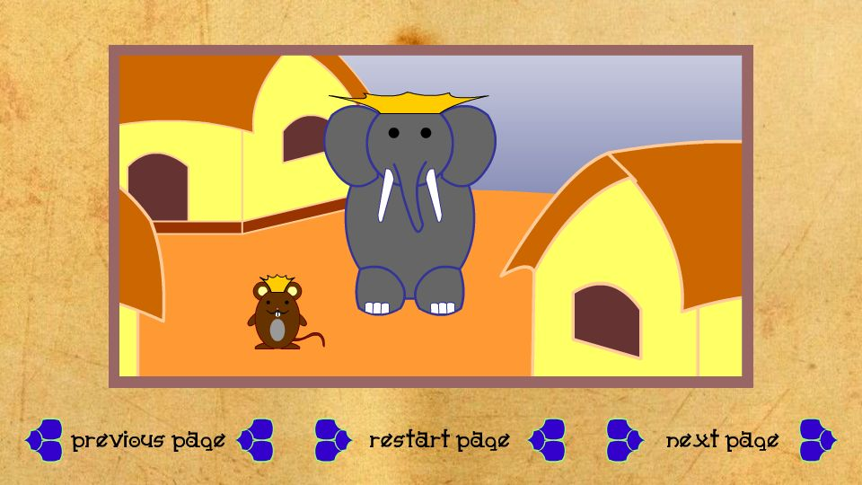

Course:
Interactive Digital Media I
Year:
Spring 2019
Focus:
Interactive media
The project overview
This was the final project for my first Interactive Media course.
Key elements include embedded movie clips, interactive buttons, sound effects, and narration. This project was originally written in ActionScript3, but was converted to HTML5 for this portfolio. There may be some change or loss of functionality.
Visit on a larger device to see the website. Here's a screenshot:
The Challenge
I wanted to make an immersive storybook that made use of animation and sound. I wanted to use fonts, colors, symbols, and sounds that evoked India.
The Solution
I animated a movie clip for each section of the story, selected sound effects, and used an online digital voice-over generator.
I animated the movie clips and buttons using a mix of motion and classic tweens. I matched the sound effects and narration to the timeline in the movie clips. The fireworks were produced by following an online tutorial. I scripted the events including stops, event listeners, and navigation.